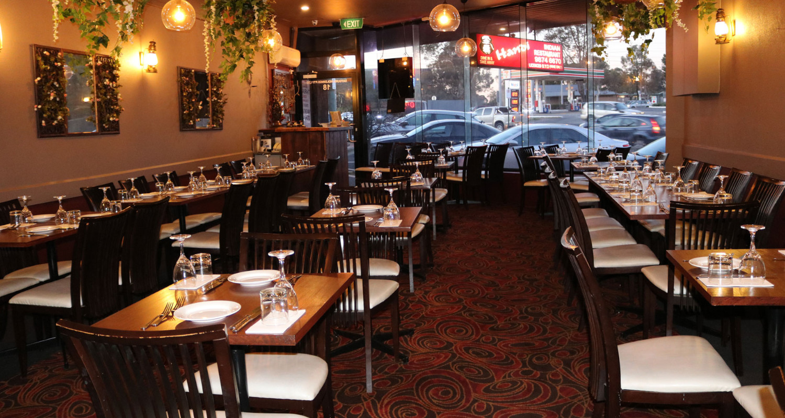

Viaggia
Questa specie di insalata è caratterizzata da diverse consistenze, che variano dalla croccantezza di chicchi di riso e delle arachidi, alla morbidezza delle verdure, e da sapori gratificanti come quello delle spezie, dei semi di melograno e della salsa di tamarindo.
Tra i piatti da provare assolutamente in India non può mancare il pollo al burro. Nonostante il suo nome, non si tratta di un semplice pollo al burro: il burro è l’ingrediente principale della saporita salsa a base di pomodori speziati che lo accompagna. Il pollo al burro è così importante che lo si può trovare anche come condimento per la pizza.
È il nome di un piatto rotondo e si riferisce anche al pasto di per sé che comprende molti piccoli assaggi prelibati, ognuno contenuto in una ciotola servita a sua volta su un piatto. Il fatto che ci sia un po’ di tutto aiuta molto nel processo decisionale, ed è sempre accompagnato dal pane. Lo troverete ovunque a Jaipur.
Tipico dell’Uttar Pradesh, il chole bhature si trova in tutto il continente. Il bhature, o pane, viene fritto in modo che si gonfi – la versione che ho provato era ricoperto all’interno di formaggio paneer salato – ed è accompagnato da chole, un intruglio di ceci piccanti.